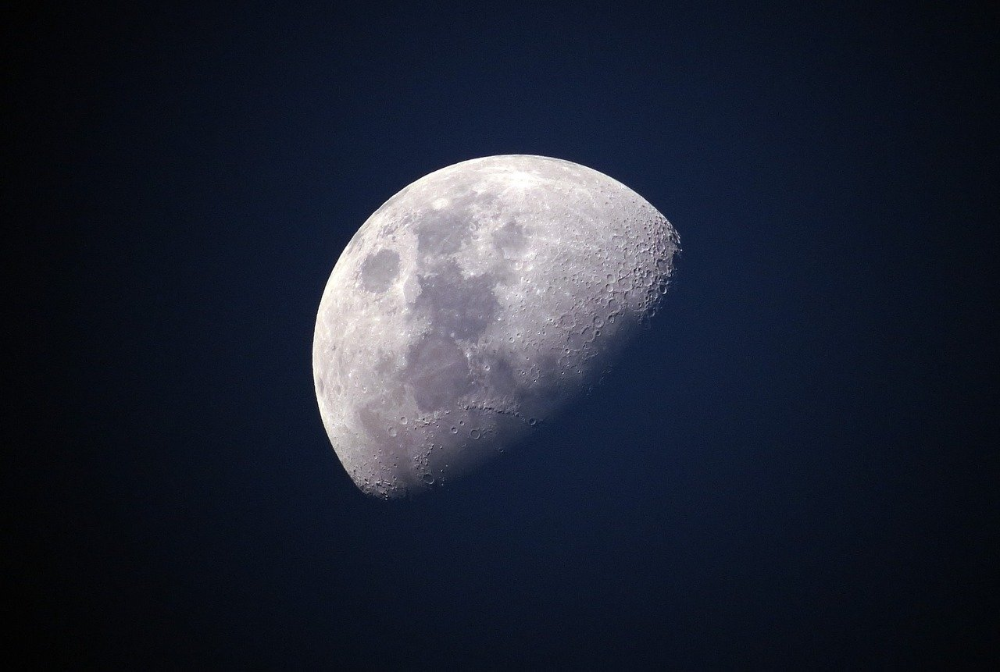
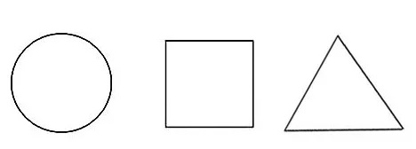

Космические летательные аппараты
Казаченко
Михаил Андреевич
-
Спутник-1ЛКА - аббр.
- Первый в мире летательный аппарат
- Запущен на орбиту в 1957 году
-
Второй ЛКА - аббр.
- Инфа
- Инфа2
-
Третий ЛКА - аббр.
- Инфа
- Инфа2
-
Четвертый ЛКА - аббр.
- Инфа
- Инфа2
-
Пятый ЛКА - аббр.
- Инфа
- Инфа2
-
Шестой ЛКА - аббр.
- Инфа
- Инфа2
- Термин про аппарат 1
- Его описание
- Термин про аппарат 2
- Его описание
- Термин про аппарат 3
- Его описание
- Термин про аппарат 4
- Его описание
- Термин про аппарат 5
- Его описание
Спутник-1
Тут информация про второй летательный аппарат
Тут будет:
увлекательная информация
про то как
как устроен первый аппарат, сколько его создавали
и чего это стоило

Тут информация про третий летательный аппарат
Здесь рассказывается про то как летают в космос, какой по номеру X1000000 это созданный людьми аппарат какие формулы a 2 - log(n) использовались для создания Такой машины (тут strong). Также тут будут цитаты из всяких источников и будут цитаты типо такой
ЦИТАТА
Тут информация про третий летательный аппарат
Инфа про четвертый
Тут информация про третий летательный аппарат
Инфа про пятый
Тут информация про третий летательный аппарат
Инфа про шестой